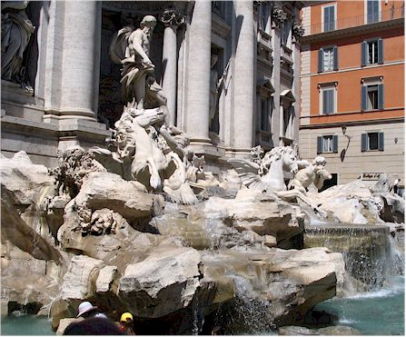
Our hotel was half a block from the Trevi Fountain, shown here. We stayed the Hotel Accademia and would recommend it to anyone.

The Column of Marcus Aurelius. Made of 28 drums of marble, constructed after M.A.'s death in AD 180.
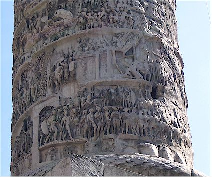
Here you can see the detail of the Column of Marcus Aurelius. It commemorates his victories over barbarian tribes of the Danube.
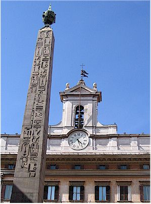
Egyptian Obelisk of Montecitorio. It was originally used as an imported sundial, but became inaccurate after 50 years

La Maddalena - a Rococo church from the late Baroque period.

The Pantheon - The rotunda's height and diameter are equal at 142 feet.

Inside the Pantheon the walls are lined with shrines ranging from the tomb of Raphael to those of the kings of modern Italy.
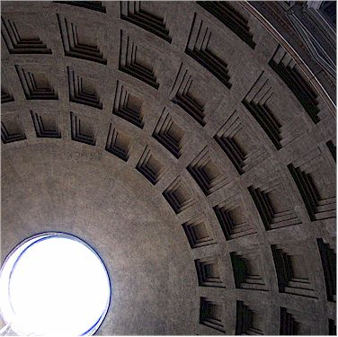
The impressive dome was cast by pouring concrete mixed with tufa and pumice over a temporary wooden framework. The walls of the drum supporting the dome are 19 feet thick.
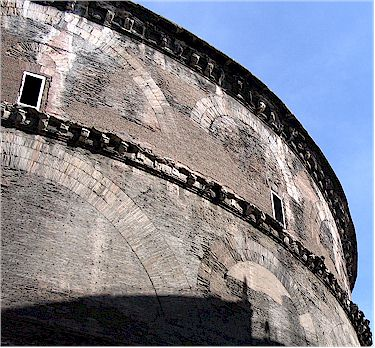
Brick arches embedded in the structure of the wall act as internal buttresses, distributing the weight of the dome.
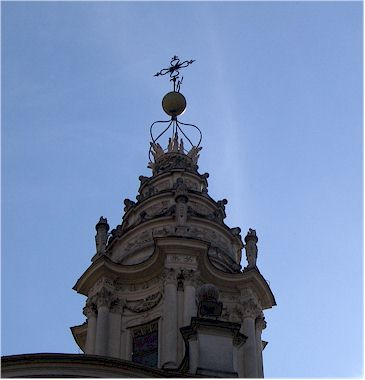
The steeple of a nearby church.
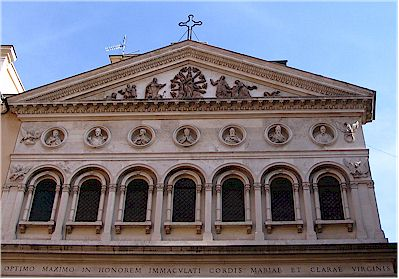
I liked the dudes in the circles on top of this building.
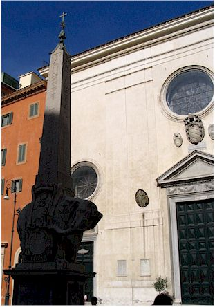
Obelisk of Santa Maria sopra Minerva in the Palazzo Barberini.It is an Egyptian column balanced on the back of an elephant. Designed by Bernini, the elephant (an ancient symbol of intelligence and piety) was chosen as the embodiment of the virtues on which Christians should build true wisdom.

Always curious, I just had to peek through the letter box.

The picture doesn't do it justice, this was a very neat view which "jumped" out at us as we passed a narrow alleyway.
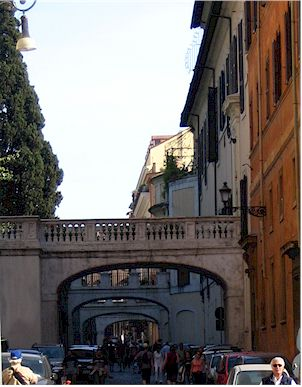
A typical street but this one had nice elevated crosswalks.
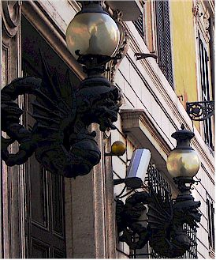
There are very fancy dragons as the base of these lights. So often you find yourself being amazed by what they spent so much time and effort decorating
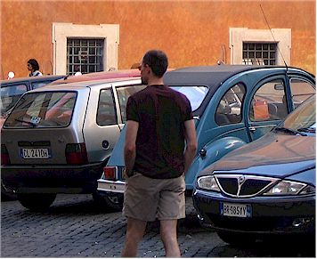
EC on the move
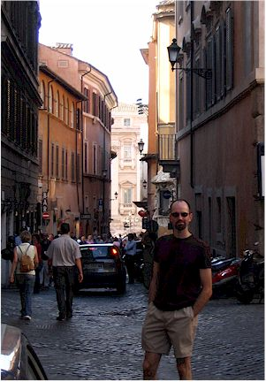
Now looking back to see if I'm keeping up.
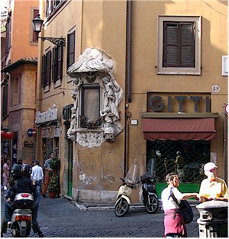
It was very common to see intersections decorated with paintings or other things like this.
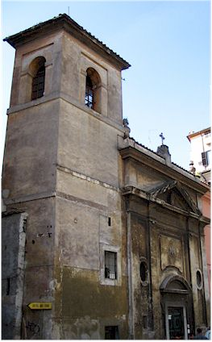
We don't know what church this is, but it looks seriously old.
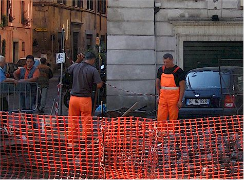

We got a huge laugh out of this - the construction signs all show one guy with a shovel. (This seems to indicate the speed at which construction projects are finished.) On a walk though town we saw a celebrity! Here's that one guy with his shovel up close in person. Cool!
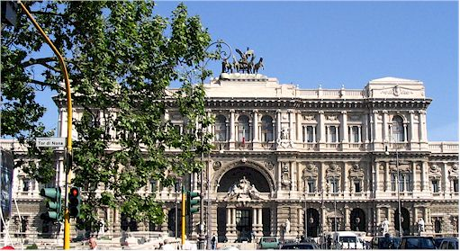
Palazzo di Giustizia - The Palace of Justice Built between 1889 and 1910 to house the national law courts.
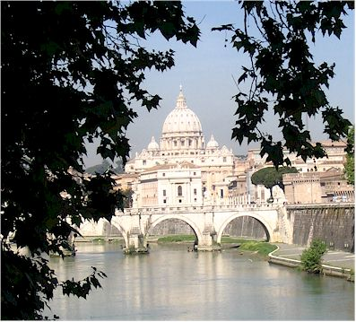
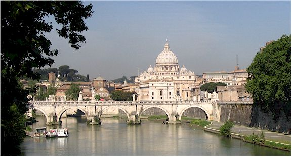
Views of Vatican City and the Tiber river
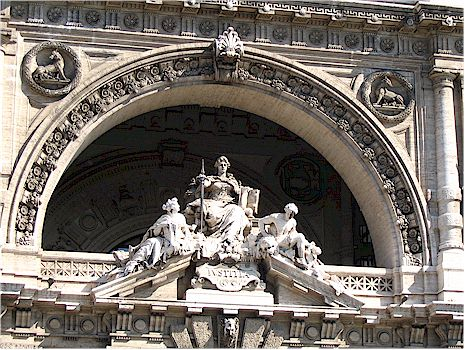

At the top is a bronze chariot.

The pretty shaded walkway along the Tibe
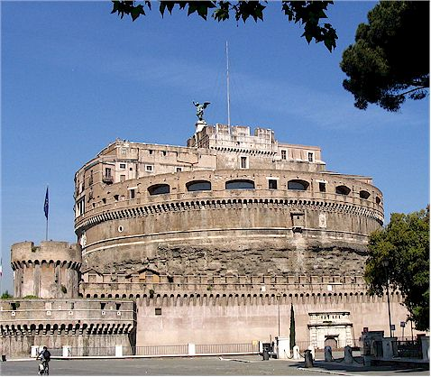
Castel Sant'Angelo. It began in AD 139 as Emperor Hadrian's mausoleum. Since then it has had many roles: as part of Emperor Aurelian's city wall, as a medieval citadel and prison, and as the residence of the popes in times of political unrest. From the dank cells in the lower levels to the fine apartments of the Renaissance popes above, a 58 museum covers all aspects of the castle's history.

This guy in the boat was fishing - I hope he didn't eat the fish, that water was nasty.
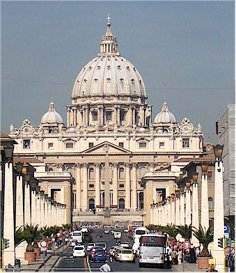
On the approach to St. Peter's Basilica
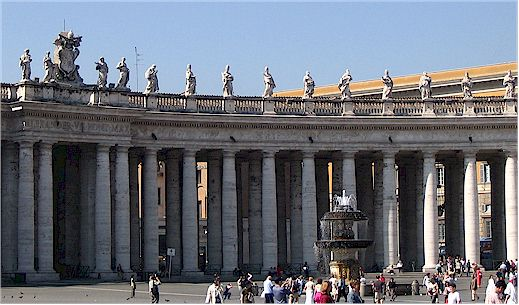
Piazza San Pietro - This area gets totally filled up with people on special occasions.

The obelisk was erected here in 1586 with the help of 150 horses & 47 winches.

Me under a giant cedar tree
Free travel advice: People planning to visit the Vatican for the first time should be aware of two things:
(a) You cannot get inside St. Peter's Bascilla wearing shorts or tank tops Eric had shorts, I had a tank top - we were practically thrown from the premises.
(b) You should get in line by 8am if you want to see the Sistine Chapel By mid-morning, entire tour buses have disgorged their passengers straight into the line.

The Pope's Swiss guard - you have to be tough in outfits like that.

Eric in the piazza

Me in front of St. Peter's cathedral
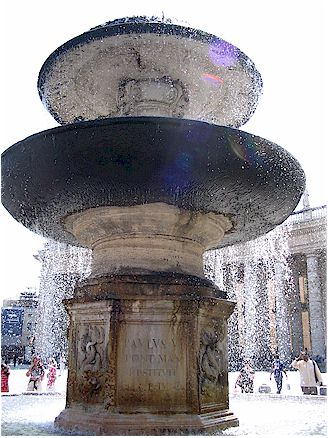
The fountain in St. Peter's piazza
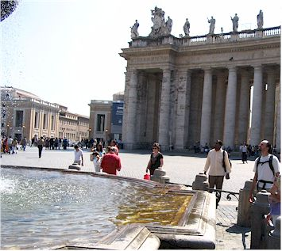
Eric, thinking about taking a dip in that fountain

We liked the way the light hit the columns in this view
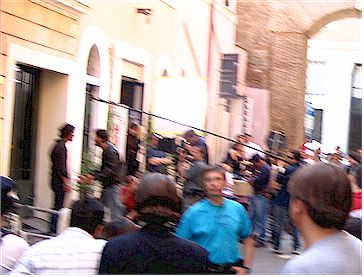
After leaving the Vatican, we happened upon a movie filming.

We were hoping it was a soap opera because they were seriously overacting
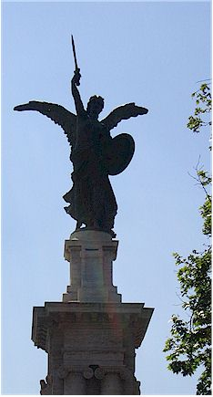
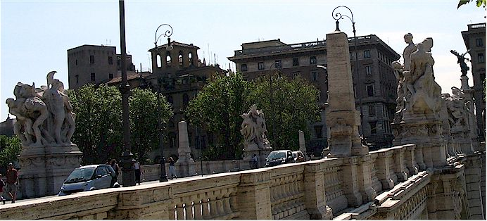
Various Statues

The detail of one of the statues on the bridge
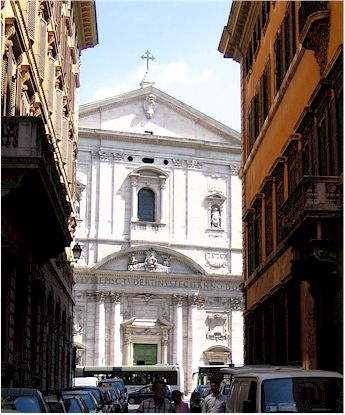
I don't know what this building is.

Detail on some random building on the street.
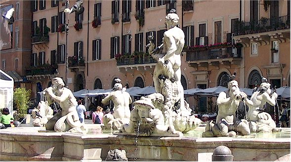
One of the fountains in the Piazzo Navona - The Fontana del Moro
The Piazza Navona - Rome's most beautiful Baroque piazza follows the shape of Domitian's Stadium which once stood on this site.

The Fontana dei Quattro Fiumi - the fountain supporting this Egyptian obelisk was designed by Bernini.
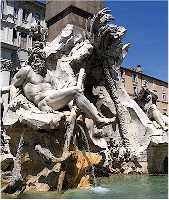
Symbolic figure of the Ganges River in the Fontana del Quatro Fiumi

I took this picture for my Pilates teacher Suze - we do an exercise called the Drinking Lion. We look just like this when we do the exercise.

The Fontana di Nettuno

Neptune and the Nereids.

Area Sacra dell' Argentina - The remains of four temples were discovered here during rebuilding in the 1920's. They are among the oldest to be found in Rome. They are creatively named temples A, B, C, and D. The oldest dates from the 3rd century B.C. It now serves as a very large feral cat house.

A neat old building - they were everywhere
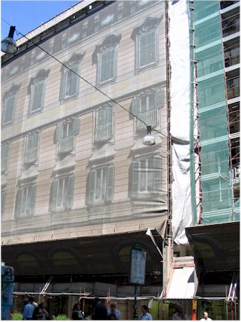
One thing we thought was neat was what trouble they take to cover buildings that were under construction. They air-brush a picture of a completed building on a screen to hide the work.
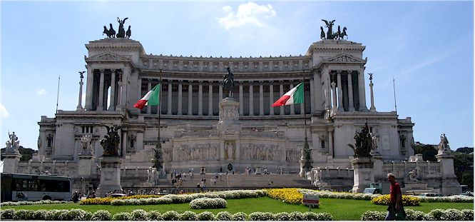
Victor Emmanuel Monument in Piazza Venezia - Known as Il Vittoriano, this monument was begun in 1885 and inaugurated in 1911.

A church dome near the Forum.

Close-up of the statues on top of the church dome.
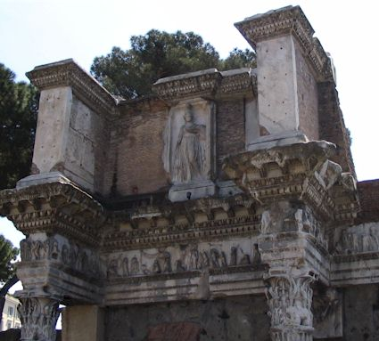

Remains of a building near Trajan's Markets in the Forum area
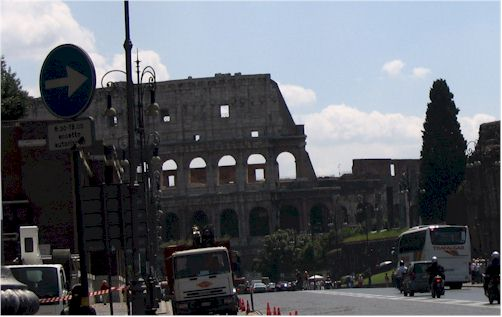
Our first view of the Colosseum
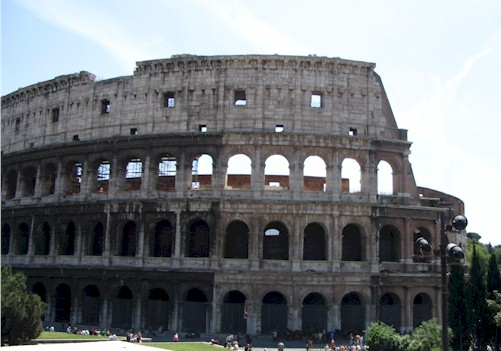
A better view of the Colosseum
The Colosseum, build in AD 72, is Rome's greatest amphitheater. Deadly gladiator fights and wild animal fights were staged free of charge by the emperor and wealthy citizens for public viewing. The 80 arched entrances allowed easy access to 55,000 spectators. One tour guide told us the entire building could be filled or emptied in about 10 minutes. Somebody needs to teach this trick to the OKC Ford Center! The emperors held shows here that often began with animals performing circus tricks. Then came the gladiators, who fought one another to the death. When one was killed, attendants dressed as Charon, the mythical ferryman of the dead, carried the body off on a stretcher. Sand was then raked over the blood to make ready for the next bout. A badly wounded gladiator would surrender his fate to the crowd. The thumbs up sign from the emperor meant that he could live, otherwise things were pretty bleak. It used to have a velarium, which was a huge awning to shade spectators from the sun. The exits were called "vomitoriums."
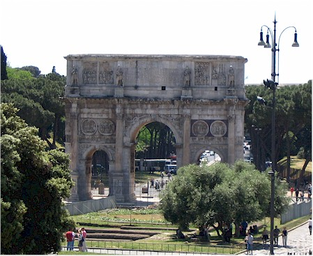
The Arch of Constantine This triumphal arch was dedicated in AD 315 to celebrate Constantine's victory three years before over his co-emperor, Maxentius. Constantine claimed he owed his victory to a vision of Christ.
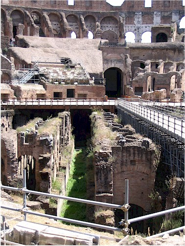
This shows the network of underground rooms where the wild animals were kept. They had ramps, winches, and trap doors which were used to make dramatic entrances into the stadium.

Roman gladiators were usually slaves, prisoners of war, or condemned criminals. Most were men but there were a few female gladiators. Here I contemplate the idea of being a gladiator. Nah, I don't think it's for me.
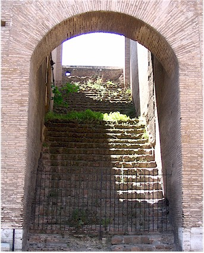
One of the vomitoriums

Taken from the Colosseum, looking toward the Arch of Constantine with the hills of the Forum behind me.

Another look at the underground chambers.
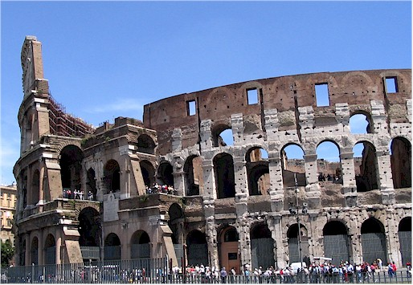
One last look at the Colosseum before we head for the Forum.

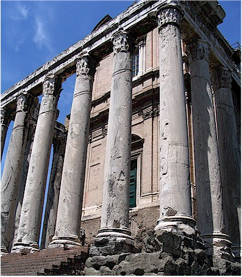
the Temple of Antoninus and Faustina. One of the Forums oddest sights is the Baroque facade of the church of San Lorenzo in Miranda rising above the porch of a Roman temple. First dedicated in AD 141 by Emperor Antoninus to his late wife Faustina, the temple was rededicated to them both at his death. In the 11th century it became a church because it was thought St. Lawrence had been condemned to death here.

Corinthian columns of the Temple of Castor and Pollux

Santi Luca e Martina - an early medieval church
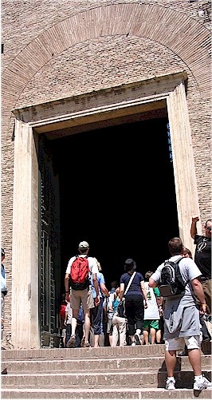
The entrance to the Curia. It is a 1937 restoration of the Curia - where the Roman Senate used to meet.
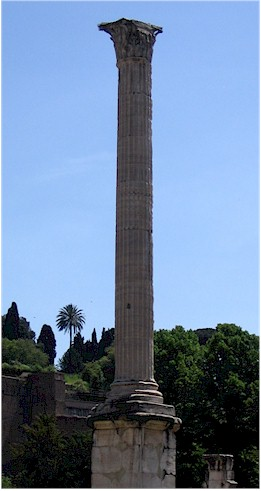
Column of Phocas - one of the very last monuments erected in the Forum. It dates from AD 608.
Free travel advice: Our favorite guide books by far are "Eyewitness Travel Guides" They use the 'USA Today' formula of few words, many pictures - which is perfect for the average American's short attention span. Most of the info I provide here came from those books.
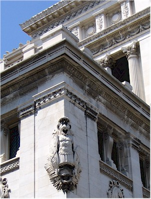
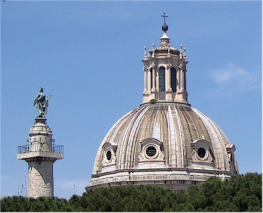
This is where my 'tour guide' spiel gets noticeably weak. I'm not sure where these pictures in this section came from exactly.


Eric, giving the statue a taste of it's own medicine.

This was an interior courtyard of a random building we saw. It was beautiful and very cool inside.


Quote Break: We stopped touristing at this point to rest for a couple of hours in the afternoon.
Then, when I suggested we take off again to view more sights, I got the following quote from
Eric,
"Are you actually going to make me walk again to see more old crap?"
So, I went to see the Spanish Steps by myself. Here they are above with the azaleas in full
bloom.
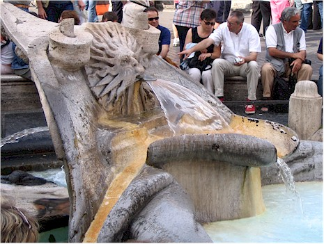
The Fontana della Barcaccia at the foot of the Spanish Steps.
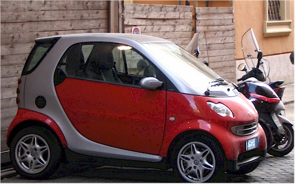
Don't European cars look like something American cars would have for a snack?
Were were amazed with the relatively small size of Rome. We walked to everything we wanted to see with no trouble at all. It seemed like we stumbled into something amazing around every corner and enjoyed lots of street-side cafes, random street musicians, and friendly people. Our time in Rome ended on Tuesday. We took a train to Naples where we then got a ride to the town of Sorrento. It was a bit overcast on the drive to Sorrento, but that turned out to be the worst weather we got on the whole trip so we are not complaining.

This is Mount Vesuvius (the one on the right) as it looms over the city of Naples
Quote Break: On the train from Rome to Naples we made friends with an Australian family. The father asked us how we liked Italy so far and we told him we were really enjoying it. He said, "Yes, but doesn't it look as though someone forgot to tidy up after the war?"

Here we are on a 2nd story terrace enjoying our first lunch in Sorrento
Quote Break: Dr. Atkins would die all over again if he tried to survive in Italy. The thing about Italy is, it's all Italian food. We never realized how spoiled we are to variety in our food here until then. We asked one man if there were any Mexican or Chinese restaurants and you'd have thought we asked him if he had ever hit his Mother. He asked, "Why would you want to eat that when our food is so great?" And yet one more quote while we're on a roll. Eric and I got into the habit of joking to each other at each restaurant, "I'll have the carbs with a side of carbs please."

Sorrento is very beautiful, as is the whole Amalfi coast.
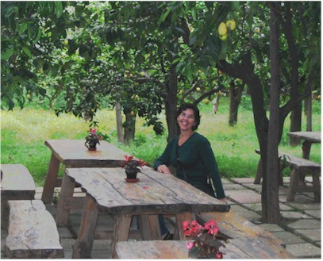
There was a lemon and orange grove straight across from our hotel.It smelled so wonderful there I cannot describe it. It was amazing how quiet and peaceful it was in there, even though it was right in town.

The oranges are the size of grapefruit, and some of the lemons are too!
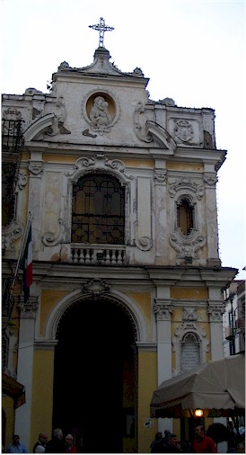
One of the churches in town.
The next part is the part that I was most excited about - Pompeii. When I was a little girl my mom
told me a story of a little boy in Pompeii on the day of the eruption. (If that was my Mom's idea of
a
bedtime story, maybe that explains why my sister became a DHS child-services worker. Just kidding
Mom!)
That story captured my imagination and for awhile inspired me to want to become an archeologist.
The idea of ancient life captured frozen in time like that is just astounding. Most of the artifacts
collected
there are in a museum in Naples, but I really wanted to see the actual site in person. It was huge
and amazing.
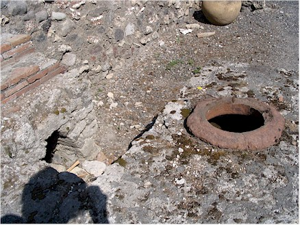
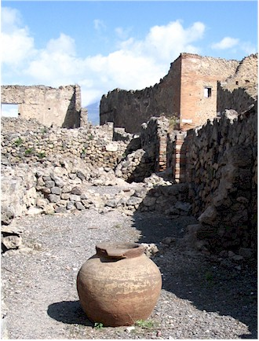
We took a train from Sorrento to Pompeii and opted not to get a tour guide. Sadly, we had a cheap local guidebook that didn't provide much information. This explains my lack of knowledge about many of the things we saw.
Here for my first picture is what we were guessing was a toilet. Yes, we know how to take a fascinating picture!
Students working on a new excavation.
The detail that survived on some of the decorations is really impressive
Me with my guide book, figuring it all out
I had really wanted to get a picture looking out over Pompeii with Vesuvius behind it. Sadly, it turned out blurry. You get the idea though.

We eavesdropped on a guided tour and heard that this was an area used for measuring things. That stone on the bottom could be slid along to make a 'cup', then you put your container underneath and slide the stone away to dump that much into your pot.
A statue in the Forum area of Pompeii
A bronze statue of Apollo striking with his arrows. From the Temple of Apollo.

Eric, with the ruins of a temple in the background
More detail of the statue shown above


Scenes from the storehouse area, where they keep many of the items that were excavated from the site.
There were holes cut in countertops everywhere, which were designed to hold these pointy-bottom pots shown above.
Eric, always the enthusiastic tourist

I don't know if these were plaster casts or the real thing, but it certainly was disturbing to see them laying around the storehouse with the bits of pottery.


These stepping stones allowed people to cross without getting their feet wet but the cart wheels could pass through. (You'd have to be a good driver though!)

I loved the detail in this old wall.

This is the floor of a bedroom with my toe in the shot for scale.

This was a garden area in the center of a house.
We read that this was like a bar. The holes were to hold the the jars for mixing drinks.

This was amazing to me - the rut marks in the road from carts. It's just so strange to put your foot into rut marks made in 79 AD

Another look at one of the roads and into one of the businesses with it's counter done in different kinds of stone.
Looking into a large building. I think we read it was a bar-restaurant but I'm not 100% sure.

I think we read this was a bakery.

A public fountain at a cross roads. Notice the bollards on the side to keep carts from running into it.

I don't know what this was but I was intrigued by the network of canals in the floor.

Along the Street of the Tombs - the cemetery area. The guidebook says of this, "Sepulchre with columns of the stacides."
Eric walking on the "Via dei Sepolcri" - Italian for Street of the Tombs
Detail of the roof of one of the tombs. They would hire professional mourners to mourn the dead. And you thought you had a bad job!
I think this was someone's tombstone.


Now we are at the "Villa of the Mysteries," one of the more famous homes in Pompeii. It was huge and was the site of a lot of really nice art. It was actually abandoned before Vesuvius erupted because of an earthquake that had happened about 10 years earlier.

Tiny, tiny tiles decorate the floors.

This was in one of the areas which looked like a bedroom.
Eric, checking out the cellar.
We think this was part of a press of some kind. Maybe wine or olive oil?
More of the floor decor. Can you imagine hiring someone to do this in your house at today's prices? It costs a fortune to do great big tiles!
This was amazing. These doors work just like the accordion-style collapsible closet doors we have in so many of our houses today
A look at one of the 3-D frescoes in one of the larger rooms.

This wall was decorated with Egyptian symbols all around it.

More floors

This series of paintings are called the "Cycle of the Mysteries" and are said to depict the invitation to the Dionysian rites. The pictures are amazing. However, what I could gather of the story they tell was unpleasant.
Part of the city wall
Detail inside the Forum Thermal Baths
The baths were divided into two sections, male and female. In each section there were three areas: a 'frigidarium', a 'tepidarium', and a 'calidarium.'I doubt that I have to tell you this is cold, medium, and hot. The heating and cooling system was achieved by running pipes through cavities in the walls.


Two shots of the same ceiling in part of the baths.

The tepidarium
In the calidarium area
Not sure what this is, again we are guessing the toilet. I can imagine the argument about 'putting up the lid' was a bit different in those days!

The dancing Faun statue that gives it's name to the House of the Faun. It is called a "small masterpiece of ancient statuary.

Eric, taking a load off.
A courtyard fountain in one of the homes.

M.C. Escher before M. C. Escher was cool.
This may have been from one of the baths and I got it out of order but I'm not positive.
I'll bet this was a nice picture before they lifted it for the Naples museum.
Indoor plumbing!
I think this was a small temple

This was very cool to me - the worn paths in the stones where so many feet have tread. This was the stairs in the amphitheater.

Taken from the amphitheater, looking at the gladiator's quarters.
Here I am, supposed to be posing but actually collapsing in a little portico.

Eric, posing as a victim of a beheading. (And we wonder why American's get a bad name overseas!)
The mother of all bird baths!

One more shot of a tile floor, then a look back at Pompeii as we head back to the train station

Looking out our hotel window at the lemon grove
The best time we had in Sorrento was, naturally, the time I forgot my camera in the room. We went down to the marina and enjoyed some quiet time watching the fishermen and other people going about their daily lives. Then on the walk back we came across a man making music boxes and he took us into his studio area to show us how it was done. It was all very nice.

Scenes from our drive from Sorrento to Positano again, it was a little overcast at that time.

On Thursday the 19th we left Sorrento.


This showed a net they had placed over the entire rock face with little white tags which they use to determine if there are rock slides taking place
This cat had the right idea!
Our first view of Positano.

I don't know why, but someone constructed a tiny city in the hillside along the road

Our room. The yellow, blue, and white tile floor was just beautiful. We had a little balcony and lots of room, it was nice.

Looking out from the beach area

Our first meal in Positano (all carbs, of course!)

We read a quote that described Positano as, "The only city constructed along a vertical, rather
than a horizontal axis."
There are very few roads, mostly only steps and steep ramps everywhere. It's very beautiful and
quiet.


My rugged man and the rugged coastline

Eric became obsessed with chocolate gellato while we were there. He sometimes had two a day that I was aware of, and he may have been sneaking more!

One of the main walkways in Positano. It is covered by vines so it stays cool.

Our hotel, the Hotel Savoia It ranks another "highly recommended" rating on the Casazza-meter.

The road system was half awe-inspiring and half terrifying. What, exactly, is supporting the weight of that road?!

Eric, out on our balcony. You might have to stretch your neck a little, but you could get a really nice sea view from there. I did some serious reading and relaxing on that balcony.
The lemons were so huge it was bizarre.
This church looked like nothing at all from outside, but inside it was really beautiful.
There were fortress-like towers all along the coast. Some of them have been turned into little guest houses.
The beautiful dome of a church in Positano

Lovely sunset view

Looking up at the town from the beach area.

Eric beside a giant anchor. I mean, seriously, how big does it need to be?
Me, in silhouette, with a beautiful sunset behind me.

We took an evening hike which was very nice. This was one of the last shots I was able to take before it was too dark for pictures.
This is near the top of Positano, at a bus stop. We decided to take a bus to the nearby mountain town of Ravello, then hike back.
The views from the bus were breath-taking until we remembered the way the roads were just 'pasted' onto the side of the coast. After that we just couldn't breathe

A look at Villa Cimbrone - It has been home to famous people like Virginia Wollf, D.H. Lawrence, the Duke and Duchess of Kent, and Winston Churchill. The Villa also reserved as the hide away for the famous elopement of Greta Garbo and Leopold Stokowsky. It was the venue of important scientific and medical meetings at an international level.
The Villa was where our hike would start.


Looking out over Ravello. It was beautiful, very high up and they made you pay to use the public bathrooms.


It's a long way to walk down, this view almost gave us second thoughts!
A kind tourist took this for us at the Villa Cimbrone

Here I am, being as contemplative as the statue.

One last picture at the Villa before we start our descent.
And down we go...
Me, sporting some 'tude.


There was plenty of beautiful scenery to entertain us on our occasional rest stops.

This was a wonderful couple we met along the way. They were the first in a series of people who
assisted in getting us to where we were
going. We were quite lost several times.
We are in a small town called Atrani now. It's like at time capsule to the past.
Here we are with a local lady who also gave us much assistance. We were kind of like a baton, being handed off from one guide to the next.

Looking up at the town from the harbor

We enjoyed the bus ride that morning so much, we decided to try taking a boat back.

Here I am, posing as we wait for the ferry.

Scenes from the ferry back to Positano


I have a little series I do of pictures of my feet propped up in front of awesome scenery. (Yes, I know, you wonder why I'm not world-famous by now with ideas like these!) I thought this coastline deserved to be in my "tourist feet" collection.

The next few shots are of the town of Positano, growing ever closer.

Later that same day we took a walk to the top part of town. This picture is of the cemetery. They put photos of the departed in the little buildings, it's very nice.
Looking down on the town from the cliff area

Another photo of the cemetery

OK, our time in Positano is now over. This is Vesuvius, taken on our drive back to Naples.
This is a picture of Naples from Eric's hotel. This is the point where I left him and he joined up with his field trip.
This was one of the field trip leaders. That's about all I know about the rest of these pictures. Maybe someday I can talk Eric into captioning them.


That's it! Two weeks in Italy. It's a truly beautiful, friendly place.